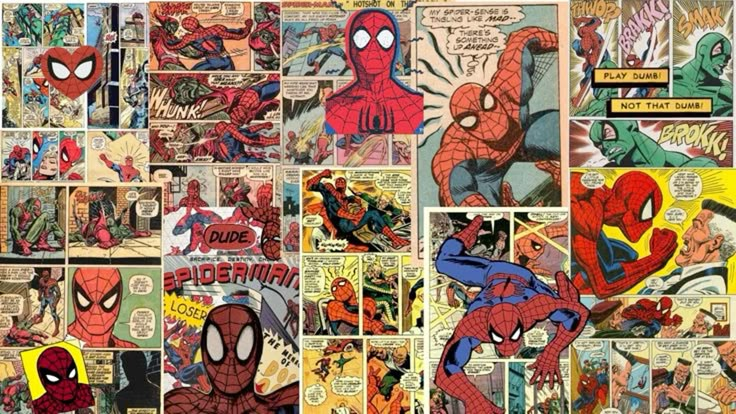
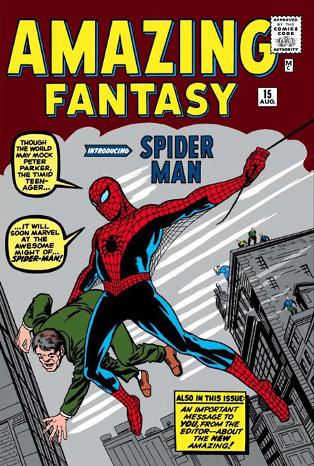

- VOLVER AL INICIO
Cuando piensas en un Super Heroe que se balancea de un lado a otro y puede trepar paredes, tienes a un Aracnido en la mente,
Peter Parker es el personaje que da vida al sorprendente Hombre Araña y promete hacer lo imposible para salvar a la Ciudad de New York.
¡Consigue todo lo que desees de este gran personaje en nuestro sitio web!
- COMICS

¿Te interesaría conseguir los comics de nuestro aracnido amigo?
Spider-Man se presenta como uno de los superhéroes más icónicos de todos los tiempos. Adorado por muchos por su ingenio,
heroísmo e inteligencia, ha sido parte de la cultura popular durante décadas. Pero ¿Conoces sobre sus origenes?
¿Recuerdas al famoso Stan Lee?
Spider-Man es un personaje de Marvel Comics creado por Stan Lee y Steve Ditko. Aparece por primera vez en la tira cómica Fantasía increíble en agosto de 1962.
El Spider-Man es conocido por sus increíbles poderes, como la fuerza sobrehumana, la agilidad y la capacidad de colgarse en paredes y techos.
También posee un agudo sentido aracneo que le permite detectar el peligro antes de que ocurra.
Mordido por una araña radioactiva, enfrenta problemas para poder mantener la paz en la ciudad, mientras intenta sobrellevar su vida de ciudadano como Peter Parker.
¡Para conocer más sobre nuestro aracnido amigo, llevate los comics que han desarrollado su historia a traves de los años a un precio accesible ;) !
| Lista de comics disponibles |
| El origen de Spider-Man, AMAZING FANTASY Num 15 |

Escuela |